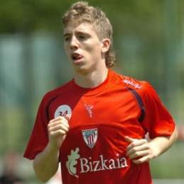
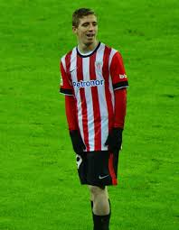
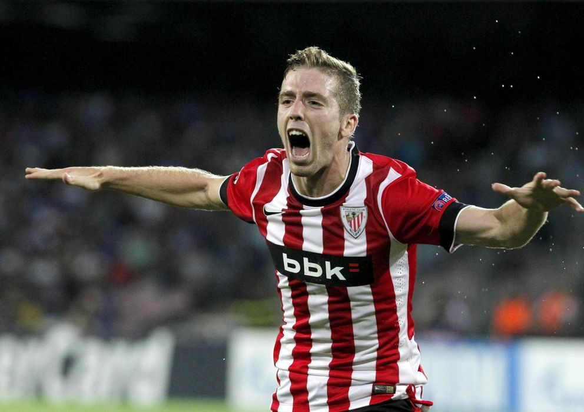

2004-2009
Comenzó a jugar al fútbol en el equipo U.D.C. Chantrea de Pamplona, su ciudad natal. En octubre de 2004 se incorporó, en categoría infantil, a la cantera del Athletic Club después de haber llamado la atención de varios clubes como FC Barcelona, CA Osasuna o RCD Espanyol. Su progresión fue meteórica, especialmente, desde la llegada de Joaquín Caparrós en 2007. El entrenador andaluz le convocó para hacer la pretemporada con el primer equipo con apenas 14 años. Meses después le hizo jugar en varios partidos amistosos. En enero de 2009 promocionó al Bilbao Athletic directamente desde el equipo juvenil. En el último partido de Liga de la temporada 2008-2009 entró en la convocatoria de diecinueve jugadores para enfrentarse al Valencia CF en Mestalla, pero finalmente fue el jugador descartado.
2009-2011
En la temporada 2010-11, se fue ganando un hueco en el equipo titular y fue titular en treinta ocasiones. En esa temporada logró su primer gol en un derbi vasco ante la Real Sociedad (2-1) y anotó el gol de la victoria en los minutos finales ante Osasuna (1-2). Su buena temporada no pasó desapercibida y fue elegido en el once revelación de la competición por la UEFA y como el jugador revelación del campeonato por LaLiga.
2011-2014
En la temporada 2011-2012 alcanzó las finales de Copa del Rey y de la Liga Europa, obteniendo ambos subcampeonatos bajo el mando de Marcelo Bielsa. Fue uno de los tres goleadores del Athletic en el histórico partido de Old Trafford ante el Manchester United (2-3) de la ida de octavos de final. A nivel individual, fue una de sus mejores temporadas al marcar nueve goles, cinco de ellos en Liga Europa que ayudaron al equipo a alcanzar la final como los tantos logrados ante Lokomotiv y Schalke 04. La temporada 2012-2013, a pesar de ser nominado para el Golden Boy por tercera vez, no consiguió rendir al mismo nivel que la campaña anterior, llegando a perder el puesto en favor de Ibai Gómez en algunos partidos. A pesar de ello, marcó un gol muy importante al Valencia, en la jornada 27, que ayudó al equipo a alejarse del descenso.
